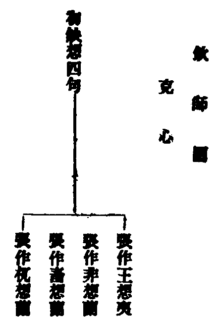
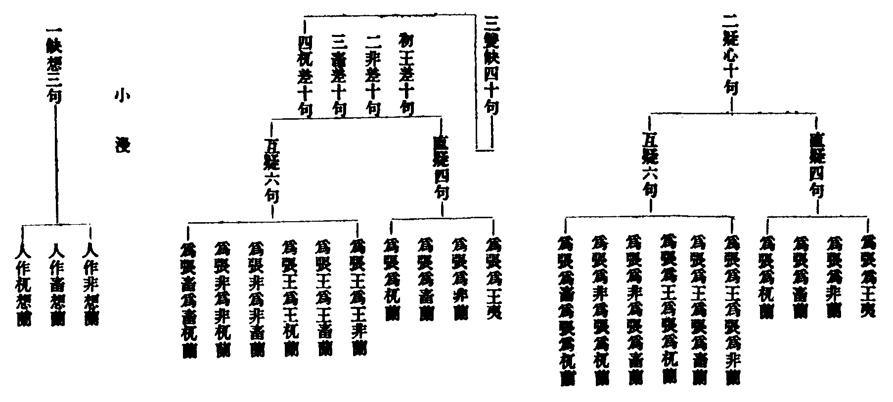
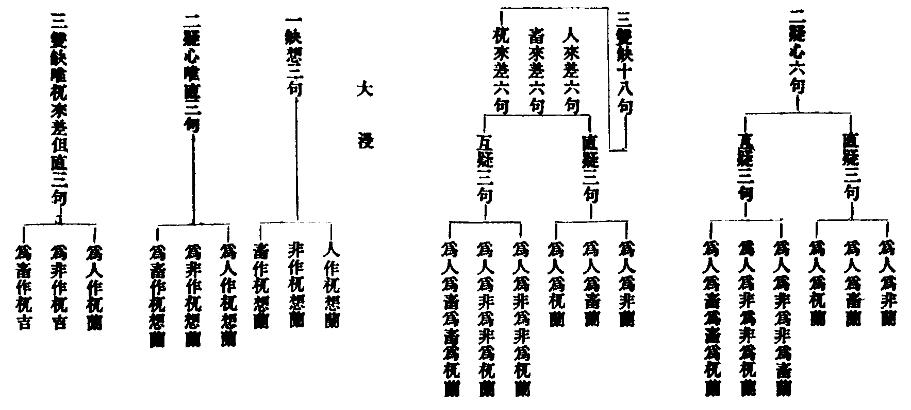
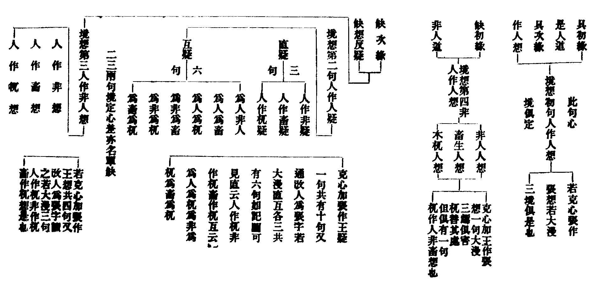
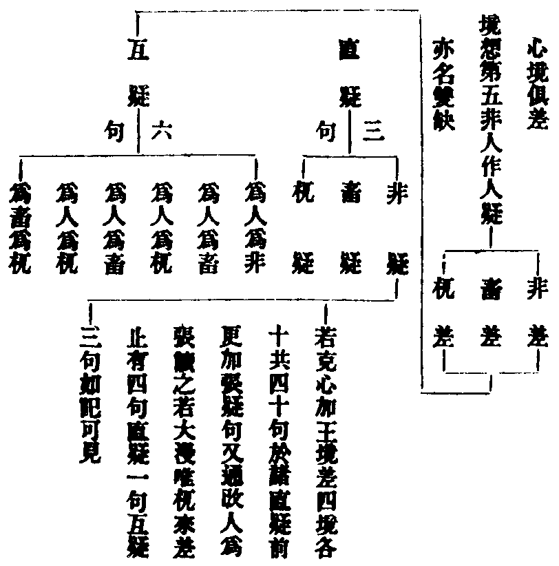

卍新纂大日本續藏經 第59冊
No.1109 終南家業 (3卷)
【宋 守一述 行枝編】
第 3 卷
終南家業卷下(本)
論心用雙持犯結制罪
學者皆云。心用雙持犯。但論化業。不犯制罪。余昔亦同此見。於會元等處。並約化業註釋。今詳諸文。義則不可。既云持犯。犯則結罪。但教行則臨事約教。須遵法式。心用依修對治。常時攝念。二種持犯。教相不濫。罪各有歸。何不依明。但從臆說。教行雙持。如別已明。心用雙持。於茲略敘。如戒疏云(一上)。若據心用。以明持犯。一切諸戒。並二持犯。何者是耶。且如淫戒。順戒禁防。即止持義。觀厭現前。無思染穢。縱有境逼。三時不樂。名為作持。違作止犯。違止作犯。(疏文)順戒禁防。顯非托事造境。觀厭無思。即是對治攝念。記云。凡持一戒。必起護心。望離過邊。名成止持。望起護邊。復是作持。兩犯亦爾。違教作惡。必無對治。(記文)此記文約持戒。顯心用之相。其實心用。一則通一切戒。二則通一切時。以凡對境持一戒淨。皆心用止作二持之功。若非操履有常。何能對境無染。對境持戒。即止持。此從教判。起心防敵。即作持。治念離犯。即止持。此二約心用。論。記中。凡持一戒一句。即對境具緣持戒。教上止持。必下並出心用義。看讀者。不可魚魯。言離過者。即離不作治念。律制犯吉之過。起護者。即作觀對治也。違教者。即違諸戒對治。及常爾一心之制。乃止犯也。作惡者。即作犯也。作惡之言。有淺有深。淺據忘念起妄。深據造境為非。此中正據忘念。當知造境為非。亦由忘念不攝也。又疏(二上)云言對治者。對婬制學離染行。不淨觀等。對盜制學少欲知足行。對殺制修慈悲愍物行。對妄制修實語行等。(疏文)此云制行不行違制也。又疏(同上)云。起對治行。明不犯法。如諸戒對治(此指慈悲少欲等。為不犯法也)。依修成就(不犯行也)。則據不犯法。起不犯行。若於此法生情厭背懈怠。不修即是托不犯法。以成犯行。(疏文)詳彼疏文。初約犯法。明犯行不犯行。次約開不犯法。明犯行不犯行。後約對治不犯法。明犯行不犯行。前二並據犯制豈得對治。獨不論犯制乎。此言對治。即前疏云。觀厭義也。以後照前。則前心用言犯。犯制明矣。又疏(同上)云。大妄開戲笑。婬摩開淨授。離衣開念捨等。若忘失念。皆有小犯。是名犯行。當自攝持。名不犯行。(疏文)若心用對治。念力堅強。忽逢上緣。定不失念。失念少犯。豈非心用結。制之明據也。記云。失念者。非謂染著前事。但遇此緣。彌須謹護。忘念即犯。(記文)記家雖有此語。亦未見明指心用犯制。致使從來。而無定論。又事鈔引律云。佛制攝持威儀。比丘若出若入。屈伸俯仰。攝持衣鉢。若飲食。若服藥。大小便利。若睡若覺。若來若去。若坐若臥。若語若默。常爾一心。若違此制。並結其犯。又如母論利根比丘。房則入入作念。食則口口作念。衣則著著作念。若鈍根者。初得衣食。總作一念等。(彼文)切觀常爾一心。即對治之異名也。常爾既云結犯。違治豈不有罪。又復須知對治。非唯在戒。常爾不但房衣。是則對治常爾。通於善惡諸境。制令一心攝護。雖云諸境。用但一心。只就一心。顯於持犯。作念攝持。即作持。無違教制。即止持(教制即律中制令攝念之文也)。失念妄覺。即作犯。故違律制。即止犯。止犯即違教吉羅。作犯亦吉。即惡覺餘思。染心看女。并懈怠忘念等。皆犯吉是也。遠離兩犯。即成二持。義極明矣。
問此與教行雙持。有何異耶。況復對治常爾。皆律所制。今依修奉。即是依教而行。豈非教行。
答。雖皆依教。結犯有異。心用據平時。用心勤隋。約教有違順。顯雙持犯。教行據臨事造作。約教有違順。顯雙持犯。的實明義。心用約心。教行據法。如衣鉢之有三如。羯磨之須四緣。制聽一切事法。皆有制作。法式作須遵依。豈不見疏云。若據教行。必托境生依教奉行。作而無犯者。是也。資持云。心用雙持。通一切戒。觀修止緣。通約化業。並非制教。彼指觀念之法。是化教行業。
答。制名乃通。約罪可判。(彼文)彼意謂。心用但犯化罪。故判觀行屬於化也。今意不同。對治教念。雖屬化教。律制須修。不修違制。如前引示。義豈不明。
問。疏云。教行即是。依教奉行之義。何以鈔云。教謂律教。行謂對治。與疏不同。未知何意。
答作者隨時。兩皆合法。鈔云。教者。即收教行。記約眾共兩行。衣鉢行護等釋之。行謂對治。正召心用。記約衣食四儀。常爾一心等釋之疏中。具明心用教行。收教出義。二種無濫。鈔中不分二種之別。故以教行二字。兼而收之。各有意也。推此鈔文。一可證上。謂心用教行。並約行相。有違有順。二可證上。謂常爾一心。與於對治。其義是一也。又如戒疏三輪判教。正取於憶念。判於律藏。蓋取律中佛制比丘。常爾憶持之義。亦可證前。對治常爾。並通一切。違皆結犯也。
問。憶持之制。通於經論。如善思念之作是觀等是也。若然則乃通被道俗之教。若比丘有犯。則應俗眾。亦有犯耶。
答。勸憶之語。雖通經論。然俗在事亂。犯非力分。推佛所制。正為內眾。況對治常爾。及當思惟。是莫思惟。是當念。是莫念。是等明載律文。正制內眾。既是正制。違則有罪。俗非正制。違與不違。一切無過。故得疏云道則反俗。常有時功。近遣塵欲遠清諸惑。若不念持。何能通會。(疏文)此明制內。違則有犯。義又明矣。
問。對治觀念。為事為理。
答。凡佛設教。為存出離。然恐極鈍之機。未達空理。但以有作之心。憶持攝念。止成事行。縱以空慧憶持。亦未稱佛本志。要須圓機上達。真正出家菩薩。以唯識妙觀。照於舉心動念。無非究竟。一實境界。是為域心於處。方見常爾之妙也。
問。失念結罪三宗何分。
答。如釋五例。及答芿師文中。略已辨明。無惜一見。嘉熈庚子歲。佛忌日誌。
辨二止并八九名義
止犯一位。準疏鈔文。標名有二。一不學止犯。二事法并句分八九。罪列本枝。顯持犯重輕。廣識心之明昧。文義雖然。詳委講學。寡於討論。今略申明。大科分二。初明二止犯。次辨八九句。初中又三。初標據。次略釋。三決疑初中鈔云。止犯心中。有作犯。如人畜衣過日。造房不乞是若望不學止犯。無作犯等。記云。止犯有二。上明事法止犯。若下簡不學止犯。次略釋。記主正據此文。分二止犯。記文科節。甚相顯然。初為事法者。即一切制聽事法也。文明房長。且舉別戒。以顯止中有作之義。若通而言之。凡作一事舉一法。持則雙持。犯則兩犯。故違教制。即止犯。妄行造修。即作犯。而此二犯。從一事生。止則一品吉羅。作則隨篇輕重。作歸前位。止在此收。皆因事法而有。乃名事法(此止犯即教行雙持犯中止犯也)。不學者。一下壇場。違本志願。或頓心棄善。或漸起慢求。或懸思教行不明。或臨事造修有昧。不學無知。二罪並得。蓋由不學。致茲成犯。召斯二罪。名不學止犯。但不學人。智有昧明。心分漸頓。凡於事法。識。疑。不識。三心差降。故此二罪。歷四行二九之中。彰輕重有無之相。令知罪網難逃。俾識犯懺不濫故也。三決疑。又二。初決事法。
答。鈔云。對事造(去呼)修。以名止犯。疏又云。所對事法。怠而不修。皆名止犯等。是則據文立號。絲毫無妄。
問對事造修。何名止犯。
答。不修之名。通作不作。此據造作。故違教制。即是不修。如不乞不說。豈不然耶。行宗云。事法止犯。於善事法。故違不作。(文)亦是此義。不可錯消。
問。可名事法作犯否。
答。作犯體通善惡事法。雖通善惡。望作義一。故無異號。但名作犯止犯一位。論犯義別。一於教行愚昧。二故違教制。據斯以分。乃立二目。請究祖懷。必不徒爾。次決不學。
問。不學止犯。通二持否。
答。前云不學無知歷四行二九。豈不通耶。但持有等差。義須詳示。當知利器精持。方得名為學者。設有疑妄。並開不犯。不學無知。唯結不學。然不學人。亦有三品。疏鈔具顯。此不繁引。雖是不學。對境止非。本罪不犯。亦名持律。不妨愚昧教行。自得不學無知。資持云。非謂不學一向無持。非謂學人永無有犯。但望學心。有進有止。故兩分之等。
問。戒疏總義云對教不學止犯。對事不學止犯。九十。別義云。翻解止犯。翻修止犯。并及鈔中。教行不學止犯。對事以明止犯。記主但立不學事法。二止犯名。比對祖師。三處所標。為同為異。
答。二三雖殊。通收無異。不學即對教。翻解事法。即對事翻修。恰然相符在文可見。
答。實通諸文。但記家因釋此文。立二止號。故今特引。令知所出。
大科第二明八九句。又分三。引據。引釋決疑初且引據。鈔云。次論止犯。或八或九。又云。言八句者。對教不學以明。若對事明。亦有兩箇九句等。疏云。對教不學。唯八句。對事不學九句。通有等。次引釋八九句法。欲知其相。請以資持止犯中。可學九句。照之可見。但八則除本列枝。九則本枝並結。鈔中又云。九句者。上品四句者。有十六罪。中品四句。有八罪。下品一句。但犯根本。無不學無知等(十六及八罪。且舉枝不說根本此九句中。自〔含〕根條並列。尋圖可見也)。資持云。八句中。此謂隨對事法。心緣不解。結不學無知。犯門解義。必須有罪。既無根本。下品不立。故唯八句等。是則或八或九。雖殊。不學無知不別。當知句法之興。為顯不學之罪。故行宗釋戒疏四行二九位列文云。第四門中。唯明不學。無知止犯罪相。有無輕重。隨一事法。皆須二九等。如此指明。文相無濫。苟或未達。更詳示之。言八句對教者。此謂懸思教相。事法冥昧。意思說戒。不曉行事。心緣製衣三如。未識籌量。羯磨罔知四緣等九句對事者。斯乃臨事造修。不明行相。如臨說恣。錯謬行事。造作衣鉢。不識制量。造房愚於妨難。畜長暗於日限等。將懸思歷於八句。結不學無知。枝條之罪。第九下品。既非造修。不犯根本。既識事犯。又非冥昧犯門。唯據有罪無罪。此句不立。若於造修。行事錯謬。亦先於八句。歷顯根條下品。第九明白心犯。雖無枝條。乃有根本。故得立之。對教對事。或八或九。其相顯明。如斯分釋。粗可知之也。
疏鈔八九句法。乃是昔解。去取如何。
答。祖師既無斥奪。焉可私心去取。細推其義。亦是相因而用。且如對教八句。於義自分。承用豈分今昔之殊。復於對事九句。例分二九。豈非相因耶。
答。古謂惡事法上。聖不制學故。止持作犯。通可不可。於善事法。聖制須學。無不可學。今謂善惡事法。並是可學。臨事迷忘。非學可得。是故可不可學。遍該四行。類通法界也。
問。上云八九句法。並顯不學無知。何以二記。以八句屬不學止犯。九句屬事法。止犯是則八句收不學無知。九句但收違教耶。又乃公違疏文。八九並云不學。
答疏文八九並云不學。正為皆顯不學無知也。記將八九。分對二止。亦據鈔云。八句對教不學。九句對事以明。今詳分對。不無意焉。須知止犯位中。根本是違教罪。枝條是不學罪。八句中。唯顯枝條。不該根本。故將八句。屬於不學。九句中。正犯根本。傍得枝條。且從正犯。以收。故以九句。屬事法止犯(此即違教罪也)。要須得意莫滯名言。如懸思教門。不曉事法此則八通事法。又如造修事法。昏昧教制。斯乃九通不學。是則事法及與教門。不學之與無知。並通八九。但以懸思對八。造修對九。故為異耳。
答。斯蓋。造房不乞。畜長不說。皆由不學愚教。犯根本殘提之外。更得不學無知。下品一句。既識達教行。但犯根本。無有枝條。疏鈔特舉。為顯下品。有本無枝之義。前示可見。
問。有人見止犯位中。房長殘提。便謂此罪。屬於止犯。其義如何。
答。不然由彼不曉文中。為顯下品有本之義。故此妄消。殊不知殘提。自屬作犯。根本之罪。若謂止中列殘提。便屬止者。亦應作中。列不學無知。枝條之罪。便屬作耶。文中所舉房長等戒。具雙持犯。隨舉無在。妄傳久矣。如拆四難。已為辨之。無惜一觀。
答。前云於止犯中。列房長殘提。乃顯下品罪相有無如前答可見。若止犯心邊。有作犯。乃雙持犯義。如過量造房。心故違尺量妄作。衣鉢必故違三如之類。由妄作一事。二犯並起。違制即止。妄修即作。由止有作。由作成止。故云止犯心邊有作犯。事鈔通塞門。約教行心用。二種論通。義可見也。須知。持犯一章。諸門意別。若雙持犯義。當見疏鈔持犯體狀門。及鈔通塞。備而明之。若諸句法。約根本。歷於三心。對顯不學無知。有無輕重之相。如此分之。粗知蹊徑。
答。妄修作犯。違制止犯。更得不學無知四罪具矣。又四行列罪。自有等差。兩持二九。并止犯八句。唯顯枝條。不列根本。兩犯。二九根條。並列。根本。據隨成輕重句。法不因此義。枝條據三心不同分句。由此而作。識則一向無犯。疑則二皆吉羅。不識之心。不學結吉。無知犯提。更有事開犯結。並見諸文。可謂持犯之相實深。非積學洞微。窮幽盡理者。斯義難見也。寶慶三禩仲冬。於靈芝為客書。
重釋事鈔持犯篇通塞文
鈔云。若就修行。解止持者。
對境策持。為修行也。此中止持。正據隨對惡境。具緣持戒者。是也。與下心用教行中二止持。名月義別也。
如止殺盜。先修慈悲。少欲等行以行成故。名作持。望境不起。名止持。即止中有作也。
止殺盜即遵制持戒。修慈等即起觀對治。欲臨境不犯於戒。須平時對治有功。治功成故。對惡不作。故云望境不起也。是則。由作成止。止不離。作故云止中有作止據臨境離過。作據用心對治。又復須知。止持有二。一對善事作。無違制此止。歸下作持論通也。二對惡境。順戒離過。正是此位。與心用作持論通如上可見。
若就修行解作持者。
此作持。對制聽。善事善法。依教策修。名作持。與前止門作持。名同義別。前約心用起觀。此據隨對事法。依教而作也。
如欲誦戒羯磨。先止外緣。望離麤過。名止。後善行成名作。即作中有止也。
誦戒等稟制教也。止外等。修對治也。事法乃多。且舉誦戒。羯磨。是常行故。人事往反。懈怠作惡。並名外緣。以平時憶本受。願有善必行。橾履既堅。故臨眾事。能止於外緣也。望隨對事法。各有離過之止為細。此乃平時通止名麤也。此中作據教行。乃依教而行也。止屬心用。乃止息外緣也。假止成作。作不離止。故云作中有止也。若細論通塞。此心用止持。與前心用作持。自可論通。教行作持。望無違教。即兼止持。亦止作自通。鈔家且約相成。故以心用止持。與教行作持。論於通也。
作犯心邊有止犯。如人作惡。先不學善。是等類也。
上句論通。如下釋義。作惡即作犯。翻上修行止持。於殺盜等事。具緣成犯者。是也。不學等即止犯。翻上止中作持。謂不修慈悲少欲等。對治行也。作犯據違戒。止犯據心用。由止成作。故作通止也。問。此中作犯。與下作犯。同異如何耶。答。此於惡事法。造境為非。下於善事法。故違妄作。此二作犯。並屬根本。隨篇輕重也。問。心用作犯。犯相如何。答。由對治心劣故。乃隨緣動念。觸境生情。如惡覺餘思。染心看女等。皆犯吉羅。是也。問。此中止犯。與下何異。答。此屬心用。下據教行。此二止犯。並是違制。皆吉羅也。但心用約心。教行據法。如前心用。結制文中。可見也。
止犯心中。有作犯。如人畜衣過日。造房不乞是。
上句標通。如下釋義。畜衣過日作犯也。違不說淨止犯也。造房作犯也。不乞止犯也。亦由止成作。故作通止也何耶因故不說淨。致過日犯提。由故不乞法。致房成犯殘。問。此中合云。作中有止。何云止中有作耶。答。欲異前科。作惡與心用論通。此中教行止作論通。隨舉無在。亦是由止成作之義也。問。此中止犯。理合翻前。修行依持。何故前持中。以止外緣。心用論通。今犯中。以房長教行。止作論通。又復前舉制法。此舉聽事。未審何意。答。此作持止犯門中。凡修事法。或違或順。具有心用教行。二種持犯。前作持中。在文雖以教行作持。與心用止持。論通。於義亦可教行作持。與教行止持。自論於通。心用止持。亦可與心用作持。自論於通。今止犯中。在文雖獨以教行止作。自論於通。約義亦可心用止作。自論於通以凡舉一事持。則具教行心用。二種雙持犯則具二種雙犯。所以文中。互舉也。又復教行雙持犯。若別據戒本。止有二十六戒。具雙持犯。若通一律藏。但是制聽善事善法。臨事造修。有違有順。並具雙持犯。故得持中。據通舉制法。犯中據別舉聽事。以犯照持。前後交映。顯並具也。問。止犯有幾。答。不學事法。二種別也。此中正屬事法。教行止犯。義兼心用。不學止犯。無兼通義。非此中論也。問。記釋此文云。二持即心用雙持。二犯即教行雙持。其義如何。答。此記家考文不細也。鈔中二持論通。亦非全據心用。且如止持。止殺盜等。乃即犯戒教上止持慈悲少欲。方屬心用。又如作持。說戒羯磨。乃屬教行。止外緣等。方為心用。豈可一槩。云二持據心用耶。斯蓋凡持戒淨。必假對治。故以止不犯戒與對治。心用論通。欲行眾法。須止外緣。故以教行作持。與心用止持論通也。二犯中。若作犯翻上心持。文理極順。如前可見。記云作惡論犯戒。不學據制科此釋義迂。學者難曉。余注會元雖且順記。心實未安又止犯中。雖非翻前作持。於義兼通。亦如前示。問。此止犯與殺盜等作犯。論通得否。答。此事法止犯。與殺盜等作犯。無相成義。不可論通。所以此位。獨約畜長造房等論通。蓋有相成之義故也。由此等事法。持則雙持。犯具兩犯。不相捨也。嘉熈己亥。日山出。
重答欽師境想問
行宗殺戒境想句欽依止。立問作圖。刊以易之。後因宗師答而闢之。復板如舊。今於講次。略考諸說。欽老之作。固無可取。因師之答。亦多不明。世雖傳寫。莫詳是非。或依文讀句。意趣冥然。故不得已。又如答釋。并決彼圖。激發學者。小留心哉。并境想通相。亦出於後。幸為一覧。嘉熙己亥。台州日山敘。
欽師問 因師答 日山又答
一問。直疑為涉幾境。若唯一境。疑起無從。且如張作王疑。祇由張起王疑。心不涉張。如何得疑。若云涉張。則兼二境。與後互疑。為張為非。如何分異。
答。言直疑者。謂於一境。猶預莫分。心不異緣。故言直也。如云為張人耶。非張人耶。乃至杌木。作句例同。是以圖中。但云。張疑非疑畜疑杌疑。斯言謂矣。由此而知。則與互疑。逈然天別。
又答。直疑唯專一境。略如前答。或於本境起疑。或直於異境起疑。須知此圖。諸直疑句。並就異境。起疑作句。問家不曉。舊答不明。轉添昏暗。且如圖中。單缺張是本境。故有王疑等句。雙缺。王是本境。故有張疑等句。大漫雙缺。人非畜三。皆是本境。故有杌疑一句。並就異境。此義最明。若於本境起疑。如諸戒境想。第二句。事義分曉。不勞具出。問。單缺直疑。著張作字。雙缺直疑。何無王作非作等語。答。著無不著。皆亦無在。但單缺直疑。著張作者。為顯境定心差故。雙缺直疑。不著王作等語。為表心境俱差故。必竟此疑。皆就異作。在文可見。
二問。單缺直疑中。何故不立張。作張疑句者。若既不立互疑中。何立張疑句互疑。既得立直疑。何不立又單缺直疑。既不立雙缺。直疑何以立耶。
答。單缺張作王疑。心差境定。若標張姓。不應本題。由是張疑。逈不可立。雙缺疑之語。正是俱差。若改從王即為當境。故於二處。不可混同。又互疑作句。非獨互張。三趣當心。應須減半。豈得却將為張之語。例同張疑句耶。
又答。單缺直疑。不立張疑句者。蓋問家不曉。圖中直疑。盡就異境作句。故有此疑也。互疑心涉二境。為張等語。有何不可。雙缺直疑。張是異境。作句當然。問。單缺直疑。若立張作張疑句。有何過耶。答。此即境想第二句。立有何過。舊答不思。謂不可立者。非也。蓋此中直就異論。故無此句。如前已示。後當更說。
答。單缺心差境定。王疑人類無殊。乃結重夷。自成根本。雙缺境差心轉。王疑又是相當。若起王疑。不成雙缺。是則前為心轉。可立王疑。後是雙差。不應稱境。
又答。單缺直疑。王是異境。故可以立雙缺直疑。王是本境。故不可立。餘如前說。舊答不明。未克再示。若爾非畜杌中。何得立耶。答如後可見。
四問。互疑中。何以不立為張為王句耶。若不立者。則攝境不盡。又若立者。句法則多。如何會通耶。
答。直疑則四境各辨。互疑乃四趣迭論。各辨須立。於王四境。方足迭論。四趣參作。方得互名。若更加王。則同人類。既非交雜。互義安成。是知直立互除。其義方顯。若或更加王句。又是心境相當。不唯句法仍多。抑亦不成於互。若云張王境別。殺戒悞犯錯開。既成重夷。豈不參雜。即知此句。定不可加。
又答。互疑。中為張為王。義亦可立。但疏中列句局(疏云疑有十句)。判罪定(疏云。一夷。九蘭)。若立為張為王。人境不殊。罪合是夷。應改疏云。二夷八蘭耶。若更添一句。應云十一句耶。二途有妨。故不可立。克心論境。張王自別。心緣二境。猶豫不決。豈非互義。但疏家別有深意。是故不立此句。記依疏出。不敢妄加。問。何為互疑。答。切詳互義。必緣二境。交互不決。故云互疑。如圖中諸互。皆立六句。前三就本異生疑。後三於異境起互。後三句中。若通本境。即涉三境。又究前後諸文。及思世間事。義多於一事不決。或緣二事不決。少有緣三而起疑者。設或有者。自歸後三句攝。問家列句。於互疑中。牒境重重。太成穿鑿。又無所據。復乃直疑與互相濫。並非可取。問。單雙二缺。互疑列句。上下一同。未審何意。答。缺心單雙雖殊。至於論互。無非四境交雜。且約本異互涉作句。故得上下一同。無別所以。
五問。雙缺中。王境來差。不立王疑句者。何以非畜杌來差。乃立非畜杌句耶。
答。若立王疑句。不成心境差。人類隨相應。還成究竟罪。三趣非人類。三境正未差。前心既緣人。後轉為非畜。不妨心境轉。方便結偷蘭。以故不立王。三趣應須列。
又答。雙缺王差。直疑不立。王是本境。作句起異。故不可立。互疑不立。句不可多。罪不可改。如前已示。非畜杌差。非疑等句。雖有與本相當。句法須爾。不可不立。若不立者。何應疏中四十之數。又且無妨雙缺之義。非等來差。即境缺也。為非等疑。即心缺也。是知記圖列句。深有其意。
六問。尅心雙缺直疑中。並以張本境立句。何故大漫雙缺直疑。不用三本境立句。大漫既不用。尅心何得用。又大漫互疑中。亦以三本境立句。直疑何不用耶。
答。大漫之設。其境至寬。三趣有心。杌為異境。其或三趣。皆列直疑。正是相當。但起杌疑。始成方便。所以圖中。唯存一句。尅心既局。四境當前。各趣生疑。應須別列。互疑心涉兩境。句法不可一端。直則一境獨明。互則三趣交作。是顯上義明。若秋蟾前合後開。深有所以。
又答。此盖不曉記圖直疑就異作句。互疑二境交涉。故有此問。如前已決。非不了然。大漫。雙缺。直疑。三是本境。故唯就異。但立杌疑一句。互疑既涉二境。故立為人為杌等句。有何不可。
七問。小漫中。疑但九句。除尅心中初句者。今若改張為人。亦合具十。何但九耶。
答。小漫人趣皆害。前境不簡張王。若或改張為人。正是有心當境。既云心差。境定不應。又作人疑。是則還依記中。除初一句。
又答。若改張為人。合有人作人疑句。此句理亦應立。正是境想第二。缺心結蘭之句。但疏家前後。辨缺文中。恐濫心境相當。並不出此一句。欲使學者易曉。皆就本異互涉作句。如前盜戒。疏中小漫辨疑云。為人非人物。為人畜生物。為人無主物。下妄戒云。漫心辨疑有六。記云。漫即小漫。疑兼有互。直有三句。記出互中三句。並就異境論互。如云為非為畜等。上引盜戒疏自作句。乃就本異論互。準此二文。則互具六句。并作中三句。即疑心具九。此圖準上諸文立句。不敢妄作。故無人疑之句。設有此疑。則準境想第二。自可知矣。立句出沒。作者通變。豈宜偏局耶。
答。相狀如初答中。既有準繩。無疑再惑。
又答。直中論疑。是張非張。其相易見。問家意欲妄作。故有此問。無足議也。
九問。文中直疑者。單就異境而立。何故疏文。盜戒立句。為人為非。此則本異兩兼。豈獨異境耶。若云此是互疑者。下妄語小漫互疑。何就異境立三句法。若或更加本境。則有六句耶。
答。直疑起心。本異俱得。異境如前王等。本境如後張疑。但不異緣。皆通作句。盜妄兩戒。俱是互疑。盜戒但出本境前三。妄戒唯論後三異趣。應知六句前後相成。若加直疑。恰為九句。則知疏記出沒互彰。不曉來由。張為妨難。
又直疑局一境起。通於本異。圖中就異作句。如前已明。盜妄立句。並就互論。如舊答就盜戒涉本異互論。(舊答云。盜戒但出本境者非)圖中前三句是也。妄中就異境論互。圖中後三句是也。準文立句。豈虗托乎。
十問。疏文妄戒。自有小漫句法。今此依何而立。與後疏文不同耶。
答。妄戒句法。與此應同。但單缺互疑。通略人趣。記文於此具足出之。下順疏家且分六句。影略互現。製作常規。良由不曉直疑。故使作句有多有少。如前盜戒小漫想疑雙缺。但各立三。總有九句。亦應以妄戒疑中六句。返破祖師。不合立三。前後異同。以為無據耶。準彼驗此。人異互彰。一代雄詮。莫不皆爾。故律中境想。唯二十六戒。具足出文。自餘諸戒。疑想並同。但是略之。無別所以。聖心明斷。豈得致疑。
又答。妄戒但云漫心。辨疑有六。不分大小之殊。盜戒明云。小漫疑無直互之別。今此殺中。方標直四互六。據文唯局克心。大小二漫。復令準作。記家考覈諸文。詳究義理。具而出之。何有不同之疑乎。



詳上圖中。一違祖教。二乖義意。且直疑為張為王等句。乃緣二境。互涉起疑。豈得云直。又詳互句。牒境重重。不遵祖典。穿鑿太過。又小漫中。直疑濫互。如前已行。互疑二句。上半本異論互。下半就異論互。與記何殊。豈特改作。公違師訓。又大漫中。唯立直句。據何文義。疏云。餘大小漫。心境缺想。並准克論。句法多少。約義斟酌。直互大槩。須準繩規。設謂疏無明文。理義亦難偏局。如三趣通害。杌替其處。或直緣杌起疑。或緣非杌互起。機情萬別。心念千差。如何一定。單雙二缺。唯論互三。至於作句。又濫於互。全成戲論。記圖所立。於教有憑。於義周足。直於一境上起。互收二境。乃至多境。但使心涉彼此。名名為互。豈非義足。後紹興年中。有會稽定師。亦出圖相。大略與上欽師是同。但於大漫想疑。各唯一句。與上為異。今但破欽師之義。定師所出。自然無取。學者亦不須傳從。費紙墨。請知之。
予因觀疏記具缺。初二兩緣。出義立句。無非本於諸戒之未。境想之文。學者討論。少懷通貫。又復諸戒境想句數。四五不定。如疏簡辨。且依轉想。皆具五句。今先以具缺初次二緣。收於境想五句。次以境想後四通收。缺想缺境。及單雙直互等疑。庶使枝文易知指掌。


上圖中。境想二五疑句。二就本境起。五從異境生。據是直疑。若唯依文。詮相不了。是故疏家。更分直互。歷境顯異。乃有多句。缺想亦爾。餘義見前答文。諸句之下。結罪輕重。並在記中。更不細出。
析然夢庵持犯四難
持犯一門。義趣幽隱。非積學洞微。誠難通解。一日忽得夢庵之文。題曰持犯四難。謂雙單難辨。止作難明。句法難定。事法難顯。初得之寶。而藏之。近與同儔議論持犯。因究彼文但得破他一端。全非祖意。且持犯之難。傳來乃久。自古義學之家。知難釋難者。斯人解矣。而夢庵乃知持犯之難。猶為達者。而於釋難。義理偏僻。似無可取。今將疏鈔明文。對析彼語。使雙單止作顯然。曲直是非昭矣。庶幾後銳。不墜於邪坑。俾同舟善知於誠教耳。嘉定癸酉春滄洲出。
終南家業卷下(本)
終南家業卷下(末)
四難云。雙單難辨者。
析云。久聞師意。唯以制中有開法。聽中有制法。如離衣造房等。方具二持犯。如斯立義。特捨通而執局。唯屈祖而罔時。今乃先錄祖文。然後。立義釋疑。戒疏云。止持對制門。可學事中。制必作者。如衣鉢體量也。言可學法者。制必須作。如三羯磨等。又問云。此止持中。但得守戒而已。若有作者。便同作持。今明作者。豈非合亂。答。今言制作。即成止持。若不依行。則是作犯。今順教作。便成止持。如三衣一鉢。法須具有。故制畜之。豈非作也。望無犯故。名為止持。依教奉行。又是作持。乃至云具二持犯。其致在茲(近有同輩。指上一節之文。是明心用持犯。以下若據教行等文。方明教行。此無稽之論。不足可道)。行宗云。為欲顯示雙持犯義。發揮云。雙持犯義。理在茲矣(此二記文。並是釋上同答等文之末)。疏又云。若據教行。必托境生。依教奉行。作而無犯。何者是耶。且如三衣。教遣備具(夢庵謂。此中明三衣等者。乃是預出離衣戒持護離失之義。今有隨流之者。猶以為是。豈為識達耶)。不敢違悔。名為止持。如教策修。順行不犯。名為作持。違此二持。便成兩犯。又云。言可學者。並制修學。事謂衣鉢等。法謂教行等。並托事法。進用修成。而無違犯。名為作持。不敢違越。又是止持。又云。前對惡法。無由可作。名為止持。此就善法。必不違越。名為止持。鈔中制止門中云。如衣鉢體量等。制作門中云。法謂教行也。教謂律藏。行謂對治。事唯可學。衣鉢體量等是(云云)。觀上祖文。豈宜偏局。須知但是制作聽作。善事善法。造境策修。或有違順。具二持犯。制作事者。且如三衣。比丘道具。制必須作。其於臨事營理。當須觀量。財體染淨。色量如非。依佛誠教而作。即是作持。不敢違教。即是止持。違越而作。即是作犯。不順教故。便成止犯。若一向不作。但有止犯。難成雙義。制作法者。且如說恣結受等。欲行羯磨。應須評量。人法事處。如非審定。綱骨緣兆是否。撿而行之。作持成矣。望無違教。止持成矣。不撿冐為。成於作犯。懈惰違教。成於止犯。止作兩犯。名異體一。二持亦然。並就一事。相番乃成。祖意如此。且非臆說。制作事法。如上可悉。不作斯論。盡成虗偽。聽中事法。疏鈔具彰。恐有惑者。更為明之。如疏止持對聽門。則以房長淨法等出相。作持對聽門。復以房長淨法等出相。豈非但是聽作善事善法。皆具雙持。故發揮云。順制聽兩教中。制作聽作邊。說有二持。反此無聖教制作聽作者。並是單持。行宗云。是則一切作持。其必兼止。若但止持。未必有作。自餘羯磨。依鉢等事。並見廣律。文舉三衣。其相甚顯。此等誠言。與夫疏鈔。恰然相同。只緣祖師。文義坦然。致此二記用與無改。何故特異反成破斥。巧事一時之唇吻。搆裝千古之謬辭。翳昧後昆。誰之過耶。彼之徒以為正說。此宗義士尚有隨流。稍逢如上所錄。祖師明文。如何消遣。問。如斯立義。亦所未安。戒疏明云。無聖教聽。並是單作。豈不然耶。答。子迷此語。故成質礙。今為通之。自然明曉。言無聖教聽者。聽即是許。有聖教許作者。莫非善事法乎。並是雙持。無聖教許作者。無過惡事法矣。盡屬單持。今文云無聖教聽。乃是婬盜殺生等。不許作者之謂也。反顯衣鉢羯磨等。有教聽作者。皆具双也。疏云。可同殺盜。有教開作。名作持耶。會上諸文。疑自釋矣(已上示通義。此下問答。及析彼義中。用別義也)。
問。若依通論。則制聽二教。事法皆然。祖師何獨。明二十六戒。具双持耶。
答。此據戒本。有開制羯磨法者。故就法上。歷顯四行。唯二十六。有法可歷。彰於雙義。餘並單論。戒疏隨篇精揀。數極於此。不可妄通。故得行宗云。此據戒本。具雙持犯者。餘並單。持豈不然耶。其於戒疏總義。通論持犯。則舉衣鉢。及諸羯磨者。豈非雙持犯。不局戒本耶。隨篇且據有法總義。通論律藏。故行宗云。自餘羯磨。衣鉢等事。並見廣律者也。源流正傳。妙若於此。未裔監觴。豈宜輙議。
答。祖師自云。就房事明。何關於法。所以二十五戒。例於法上。顯雙持犯。唯此一戒。重就事明者。乃有二義。一者。事法相對。法就處分以明。事就度量以顯。如疏云。此則約其度量。顯於違順。及論結犯。並據房成。是犯分齊。二者房是聽事。就一房事。明雙持犯。則顯一切聽事。並可雙論。
若爾。雨衣瘡衣。亦是聽事。何不具雙。
答。此之二戒。固是聽事。戒本不列者。無法可歷故。所有尺量之文。乃約造作邊。自成雙持。義在通論也。又如過量佛衣。過量坐具。乃是制事。尺寸數量。自屬制中。造作違順。明二持犯。戒本不出。亦歸通中。如發揮云。制作聽作邊。說有二持。又資持云。教制奉行。或事或法。或制或聽。且如三衣等。然斯二記。並約通論。文義可見。為不了者。更略示之。二十六戒並聽中有制法。如造房處分等。制中有聽法。如離衣羯磨等。緣有此法。故就法上。相從歷顯。持犯四行。雨衣瘡衣等。此聽事也。佛衣坐具。及毛綿等戒。並制事也。如是諸戒。各於制聽。造作順違邊。論於雙義。是故戒本。唯據有法。止二十六。餘所不出。義婦通說。
答。如上略示。諸戒推詳戒本。或因求畜違限。或因造作乖方。既各違教制。豈無違教心犯罪耶。是則順成二持。違得兩犯。如前已示。可以明也。但以無別聽法。戒本更不重出也。
答。請觀前文。具二義故。故須別顯。四難指尺量即法。以成雙義。此由不究通論之意。故此妄釋。
問。上云二十六戒。並就法上。歷顯雙義。至論結罪。還就事耶。還就法耶。
答。事法相假。乃成本罪。且如雖不乞法。若不造房。難成其犯。要須造房事成邊。全於不乞之罪。如疏云。此之不乞。及以過量。緣雖兩望。果由房結。離衣入聚等。可以例之。如云身違事合。名作犯等。
答。如疏云。若據教行。必托境生。又云。並托事法。進用修成。又云。如造房衣鉢。達相了知等。及諸篇總義。皆就造境違順。以明持犯。行宗釋。緣雖兩望。果由房結二句云。既有二作。必兼兩止。並望身業。造作過量。具兼四犯。又云。業不自有。必假行成。行即行心。無非造作。若都不作。但是無記。焉能成業。明文更廣。恐繫不引。斯示文義。次析難辭。行宗云。自餘羯磨衣鉢等事。並見廣律。
析云。亦同亦異。若二十六戒。有開制羯磨。則與衣鉢等異。若論持犯。雙義則同。何者且二十六戒。則就羯磨法上。以顯雙義。衣鉢羯磨。則就制作度量上。以示雙義。豈非同耶。
四難云。今不作三衣。或體量不如。及不行一切羯磨。具二犯否。若云須具。比前諸戒。理有不同(云云)。又云。今不作三衣。則有事上止犯。若望不依教邊。結法上止犯者。二犯同名。不成雙義。
析云。不作三衣。及不行一切羯磨。但有止犯。不成雙義。固不在言。須約造境營構。或三如違順。或四緣是非。方成持犯。乃有雙義。如上立義。示相可了。云云之文。不攻自破。
四難云。若爾。疏引衣鉢體量。一切教行。歷顯雙持。那云不具。答。衣鉢體通。單雙須簡。故文云。若據教行。必托境生。依教造修。作而無犯。今不作衣。是不造境。但有事上。番修止犯。若論造作。如非。亦有商量。且如衣鉢。體須聖制。衣以麤布。鉢須瓦鐵。今用絹木。則是體乖聖教。正屬作犯。既無教聽。無法可止。故無止犯。乃至云此據造作。以顯單犯。既以造成。理須加法。今不受持。准鈔得吉。約義定之。此屬止犯。既無造作。作犯不成。既加法已。必謹護持。有緣聽離。要須乞法。今既不乞。即是止犯。違教故離。又是作犯。方成雙犯。若此以明。衣鉢行護。必具二持(前註云。夢庵約持護論者。文見此也)。
析云。觀此一節。要以疏中。衣鉢體量等文。即就乞法離衣。上明雙持犯。乃是預指離衣戒。非就造作以論也。如此看讀。豈為上達。如此樹文。從費紙墨。戒疏明云。今言制作。即成止持。若不依行。即是作犯。今順教作。便成止持。如三衣一鉢。法須具有。故制畜之。豈非作也。望無犯故。名為止持。依教奉行。又是作持。乃至云具二持犯。其致在茲。若依彼意。此等文相。如何消釋。及撿離衣戒雙持犯義。但就羯磨法上。歷顯四行。則與前文。略無相似。所言既無聽法故。無止犯者。且無主房事上雙持。豈有法耶。可細思之。
四難云。問文云。且如三衣。教遣備具。正據造作。豈唯行護。答文相含畜。裁斷實難。若約通論。義含造作(云云)。
析云。今詳彼立。問雖符義。答又乖文。疏云。不敢違侮名止持。彼作二意註之。一意云。如體乖佛制。不敢造作。(彼文)此謂不作名止。於義甚疎。今與改云。佛制三如。違則犯罪。今欲造作。順行不犯也。一意云。不得羯磨。不敢擅離。(彼文)此又不然。此制門中。於造作邊。歷顯雙義。妄將聽法註顯。可非雜亂耶。疏又云。依教策修名作持。彼亦二意註之。一意云。如體依佛教。如法造作。(彼文)此如其理。一意云。有緣欲離。從僧乞法。(彼文)斯由穿鑿。全非祖意。制聽雜亂。如前已明。又復彼謂止據不作。作據策修。此論二持。名異體別。是古師義。如三十義門已破。今雙持犯。止據造作離過。作據依教策修。名體不監。今義成矣。只由不善思文。故有胸談臆說。如實自昧。其猶可恕。知而故違。謗法咎深。彼又云。若約翻犯。則造作邊。單有作犯。無別止犯。是何言歟。翻上二持。以成兩犯。四行足矣。便顯造作。自成雙義。如何強云。無別止犯。此非謗法乎。彼文更廣。不必盡析。識者觀之。自成無用。
四難云。問。離衣有聽。可云雙犯。房事過量。有何聽法。答。量雖佛制。是佛所許。雖無現作之法。然有尺量之文。即此律量。便是聽法。此法與離衣等戒。羯磨不殊。
析云。然房之有尺量者。乃是聽中。制作度量也。豈謂尺量。便是聽法。若便是者。聽中又聽。是何佛意。又復尺量。若是聽法者。則與處分白二何別。若云是同。祖師不應事法分二耶。且衣鉢亦有度量。可是聽法耶。疏云。就房事論。何甞言法。全成戲論。略無可探。繁文雜義。顛亂難析。總究彼文。則有二意。一惟約有開制法者。屬雙持犯。局二十六戒。餘則不可。二將戒疏衣鉢體量等。文迃曲釋。歸離衣戒。非就造作以論。其文雖多。不過二意。如上引文立義。明如指掌。公心看讀。可自鑒之。義假文顯。莫訝觀縷。
右析雙單難辨竟。
四難云。止作難明者。
析云。彼以教行雙持犯。隨戒本罪。屬於止犯。樹文立義。云云久矣。隱連二師。雖詞而闢之。其奈狐疑尚擁。再有此作。誑惑脫生。為害不少。今亦先謄祖誥。然後立義決疑。使止作不濫。根條自分。疏云。就房事明。依教不越止持。撿教知量作持。出於教量作犯。不順教故止犯。次就法辨。如法無違止持。從僧乞法作持。故違不乞作犯。即此違教止犯。止據無違。作據順教。乃至問云。準此持犯。與前既乖。約事明作。身營可悉。故犯僧殘。約法明作。其相如何。答。此之過量。及以不乞。緣雖兩望。果由房結。對相思事。隨有四違。纔一舉乎。營稱土木。即有偷吉。四罪隨生。安有過量。偏屬作犯。若如此問。後戒無過。無作犯矣。準此誠例。身業是過。行宗云。此約方便。二作犯兩蘭。二止犯兩吉。又云。並望身業造作。過量具兼四犯。發揮云。四罪釋上四違。謂作心不乞。造過量房。結二蘭(與行宗同)。知是妨難二處。得二吉(與行宗別)。又云。知不乞罪是僧殘。鈔云。但不依戒相。造行成辦。悉名作犯。所對事法。怠懈不學為止犯。疏又云。如有羯磨說。麤罪是作持。不違教說名止持。無教輙說是作犯。抑教不求止犯(云云)。審詳祖意。定以教行雙持犯。隨戒本罪。結屬作犯。何者是耶。如上所引。不乞過量。並約身業造作。違越而成。得二僧殘。在文極顯。何事遲疑。疏中又云。出於教量。名作犯。此戒本云。過量作者。僧殘是也。又云。故違不乞。名作犯。(此謂不乞屬作)又云。由於僧殘有乞無犯(反顯不乞犯殘)。據此二文。不乞屬作。犯殘明矣。正同戒本云。不將諸比丘。指受處所。僧殘者。是也。疏又云。既從僧乞名作持。於僧殘罪。欲犯不得。名止持。請以此文。翻持說犯。豈非犯殘。屬作犯耶。又如離衣入聚等。不乞羯磨。不作白知。更不離衣。又不入聚。可獨結法上止犯罪耶。由不乞不白。擅離擅入。約身業。輒為成於本罪。事法相假。此罪屬作。止據違教。通得吉罪。二十六戒及一切制聽事法。皆例此明。鈔疏文義。明如皎日。記文申釋。意亦無昧。彼何特異。強生分別。剛欲伏從。奈道理迃疎。從之是難。斯提大略。問答析難。更為明之。問。鈔云。止犯心中有作犯。如人畜衣過日。造房不乞。収作歸止。屬止明矣。又資持云。作持止犯。但引房長。可不然耶。答。此止犯中。列聽作事者。乃顯双持犯義。但止就離過。作就策修。故為二持。犯則反之也。如上聽止中。以房長出相。聽作中。亦以房長出相。即其義也。況引鈔文。乃出通塞。二犯皆通。止作無在。若爾。戒疏三十義門云。九是作持。止便成犯。據此之文。屬止又明。答。若觀大意。文亦無害。良由此九。具雙持犯。隨舉無在。何苦執文。又復此且一往。就策修奉行。名作持。違教不作。名止犯。及下分釋。止作自明。如說淨云。故違不說。名止犯。越於期限。名作犯。至論結戒本罪。正據違限。故戒本云。齊十日不淨施得畜。若過者尼薩耆波逸提。又取尼衣云。番止受納名作犯。及於戒本。正約貪心受納。結於本罪。據斯以論。教行持犯。若就持說。則以作持為本。如云依教奉說。名作持。又十三云。撿教知量。從僧乞法。皆名作持。若就犯說。則以作犯為本。如云約事明作。身營可悉。故犯僧殘。又云。出於教量名作犯。如上云。越於期限。身違事合。又疏前文。房衣財食。作法而生。近表作持。遠防作犯等。如斯引示。作持作犯。雖非相番。道理當然。明文朗義。屬作顯矣。問。戒疏云。有人解。止犯位中。對教不學。則唯八句。除事法俱識也。對事不學。九句。通有如造房舍衣鉢。雖達相了知。何妨不乞處分。受持加淨。皆獲殘提等罪。豈非止犯屬於本罪(鈔中止門文亦同此)。答。子迷久矣。前雖析顯。猶乃執文。且止犯位中所引。房長衣鉢。由屬雙持。故得止作。皆列文中。雖云不乞。乃屬止犯。及犯僧殘。還據作成。如前引示。文義甚明。衣不加持。長不說淨。正屬作犯。指提顯然。何為執此。妄云止犯。當知此文所引。別有其意。蓋由造房不乞。衣鉢及長。不加不說。皆因不學愚教。疑及不識。犯根本殘提。更得不學無知。下品一句。既識達教行。但犯根本。無有枝條。疏鈔特舉。為顯下品有本無枝之義。須知句法。為顯何事。豈可將出相之文。便同本位結犯。只緣教眼不明。看讀多滯文相。尚有聞義不能從者。其奈之何。如辨止犯名義中。又為明之。
四難云。若謂作犯。且四行不乞犯殘。判歸止犯(云云)。由此諸戒本。屬作持。正翻止犯。傍収止持。翻屬作犯。
析云。疏云故違不乞。名作犯。何云歸止耶。由此諸戒。並據依教策修為作持。違教輙作。為作犯。如上以示。此非相翻。道理當然。
四難云。若謂止犯。且造房過量。足食杖囊等。並據作成。何云止犯。今准行宗。定屬作犯。故釋二房偷吉云。二吉止方便。二偷作方便。乃至云。若作此定之向引明言教相。皆有相違。
析云。行宗正順明言教相即非相違何耶。疏云。約事明作。身營可悉。故犯僧殘。乃至云不乞過量。緣雖兩望。果由房結。亦如彼言。足食杖囊。並據作成。非誠言耶。
四難云。故知本罪。定屬止犯。戒疏文云。翻修止犯。挓相具九。如九十中。不作教法。輙行輙食。輙語輙取等(云云)。
析云。只由不觀疏文大體句法之作。是為何事。故有妄消文相。誑惑學從。然不知止犯位中。番不解。得不學無知。番不修。得違教之罪。此二止犯罪。名相監故。須顯示。如上問答。義已條理。今此文相。連綿重分句讀(音逗)。文云。不作教法者。此句正得違教之罪。屬於本位止犯。如疏云。抑教不求。名止犯。是也。輙行等四。正犯根本。乃歸作犯。又疏云。無教輙說。是作犯。是也。由此諸戒。不作教法輙造前事。止作雙結。止據違教。作據身為。今位正論止犯。必須雙列四輙。故結歸云。望不作法名止。隨作即違名作。在文自顯。何不釋然。
四難云。若爾諸戒。有法可止。故名止犯。無主房中。過量之罪。就事論犯。犯是作成。文云。過量作者。僧殘。准此作犯明矣。何云止犯。答。事雖在房。犯還據法。乞法驗量。皆是作持。不乞不驗。並屬止犯。准此不乞處分。不依教量。二犯屬止。皆結僧殘。故違不乞。故出教量。二犯屬作。並結吉罪。
析云。所言事雖在房。犯還據法者。正與明言教相。實有相違。疏云。緣雖兩望。果由房結。又云。纔一舉手。營構土木。即有偷吉。四罪隨生。准此不乞過量。並就房事成時雙結二犯。何言據法耶。所言。不乞處分屬止結殘。故違不乞。屬作。得吉者。兩句不乞是同。何強分二。又此不乞。屬作屬止。結殘結吉。如此顛亂。是何見解。祖師明云。故違不乞名作犯。何言止耶。又云。即此違教名止犯。何甞將不乞屬止耶。鈔云。若不乞法。便結僧殘。誰言吉耶。彼又云。故出教量屬作得吉者。是何言歟。此乃正就。過量房成。結作犯殘。不應得吉。文如前示。義亦可領。後諸問答。盡是如峨投火。如蠶作蠒。自焚自毀。自縛自纏。若得上義。不析自明。誠由只攻他短。不覺己非。祖誥明規。不肯依奉。輙乃巧生穿鑿。樹文立義。云云極多。既非教意。盡是閑言。伏請高達審詳祖訓。莫看人情。
右析止作難明竟。
四難云。句法難定者。
今析云。且事鈔戒疏止作句法。破古立今。分句節目。明如皎日。資持行宗依而申釋。問答決疑。又加分曉。如秋水映日。表裹明營。彼言難者。只由不依祖教。強生分別。使直而却迃。明而却昧。如日之被雲。大地昏暗。雲之過也。而言新記尚有失者。請陳失相。且莫背後捻拳。浪稱勝負矣。
右析句法難定竟。
四難云。事法難顯者。
今析云。所言教行者。該乎事法也何耶。且制作聽作。善事善法等。有教令作。即教。依教行之。即行。如疏云。並托事法。進用修成。又云。莫過事法等(云云)。
四難云。及論二房。乃云事法分二。有人准此。別立事法。雙持犯義。乃至云。則子所立。自成無用等(云云)。
今析云。有人之義。未知是誰。便依彼立事法雙者。亦無大過。如上所引。可以自通。又如就房事明。次就法論。豈非事法耶。言教行則通也。言事法則別也。収別歸通。名於教行。從通分別。可云事法。又復應知。就稟教行。行說名教行。若就造境。說名事法立為事法。理之有在。何強撗攻。此門文繁。且無急要。恐費紙墨。更不盡析。覽者宜詳鑒諸。
右析事法難顯竟。
徵顯定道二戒
定共道具。有漏無漏。總別解脫。諸文之中。或就機揀。異。或發體有無。或約證之有聖凡。而於修之分理事。文義交參。學者難曉。今為敘之。更不分科。廣陳由致。但直引諸文。令知差別。略伸問答。以決異同。
業疏(三下二紙)云。定道二戒。約心論業。別脫一戒。從緣發生。記云。定道二戒。不從緣受。隨入禪定斷惑證道。任運發起。故名定共道共。亦名禪無漏。對下別脫。亦名總脫。又疏(十二紙)云。八者隨心無作。入定慧心。無作常起。如成論云。有人言。入定入道。有禪無漏律儀。出定則無。又云。出入常有。常不為惡。善心轉勝等。記云。定慧心中。所發無作。兩宗不同(兩宗即上成實二義)。事鈔(中一)引多論云。木叉戒。佛在世有。希現故勝。禪無漏戒。一切時有。二有漏木叉。通情非情。寬故言勝。餘二局情。狹故不如。三有漏木叉。從慈心發故勝。為佛道作因。四木叉戒者。被及七眾。紹續三乘。三寶三道。住持功德。餘二無能故劣。五木叉戒者。唯佛弟子有。餘禪戒者。外道亦有。記云。定道從心為因。與定慧二心同時。故並言共。亦名為俱。此辨名也。二別定並有漏。道共唯無漏。別脫欲界業。定共上二界業。道共非三界業。此論體也。三別定通凡聖。道共唯局聖。此位分也。四別脫假緣受。定道隨心發。此明因也。五別脫但隨身。要期盡形故。定道名隨心。生死不絕故。此示功也。又鈔引成論云。一日之中。受七律儀。隨得道處。更得律儀。而本得不失。勝者受名。又戒疏(一上五紙)云。如論所引道戒名解脫。事戒名別脫等。
問。定道二戒。發戒體否。若不發者。何以前諸文中。並云發耶。若云發者。何有白衣羅漢耶。
答。所言發者。乃於昔受體上。增發勝解。前若不受。無體可發。如白衣羅漢者。是也。
答。必有五八之戒。為其行本。或往世曾受習氣相連。入定道時。任運離惡。故名定道戒也。且據今生。十具無因。故不發體。與俗是同。故名白衣也。
答。此蓋前有要誓。期在證果。感發具戒。不同定道。前無方便。復無要誓。體無從發。但於前受增發。勝能如前。成論云。本得不失。勝者受名。是也。
問戒以對境防非為義。入定入道。何得名戒。
答。如入定之心。具二義故。一者凝寂。此即是定。二離非惡。此即是戒。體是一心。二不相捨。名定共戒。又如入道亦具二義。一者虗無。此即是道。二離非染。此即是戒。二不相捨。名道共戒。須知戒義。由昔曾受別脫。無作功力。於藏識中。任運離惡故名戒也。
答。前云無作發者。由昔戒力。隨其道品。任運增發無作。非謂有心稟受。別有體發也。如前可見。
問。何無道共定耶。
答。亦有此義。入道之時。凝寂不散。即是定義。蓋因修三學。果上證道。亦具三義。隨位進登。勝則俱勝。
答。小乘所證。於事未融。其入觀也。人法俱亡。與道體合。故云入道。及其出也。不無事礙。故云出道。
答。既證聖位。動必合道。但不如入觀。能所俱亡。藥病皆捨。猶如虗空。了無罣礙。正與道體合也。若在大乘。出入皆如。故非所辨。
答。須知小乘增進果位。並於入觀。見其深淺。戒與道俱。亦從觀判。故分出入。增發戒德。隨心無絕。故言常有也。
答。有漏木叉。五。八。十。具。遮性通禁。是故戒境。通情非情。定道離惡。境局有情。以遮境非情體非惡故。問。前引資持云。別脫欲界業。定共上二界業。道共非三界業。此論體也。
答。乃戒之本體也。謂別脫戒。教限本體。只是散善。依此所修。止生欲界。定體凝寂。依此而修。生上二界道體虗融。依此所修。得證聖果。
若爾別脫。全非道耶。
答。此有二義。若據教限。戒即散善。若約機修。隨其行力。有事有理。兩凡薄地。順戒集業。是事亂故。若登聖位。以觀融行。戒屬無漏。前引婆論指別脫為有漏木叉。又資持云。別定並有漏者。乃據教限判也。如戒疏引伽論云。戒是有為有漏。世間法者。是也。
答。定道二戒。入定道時。總離諸過。故云總脫。如戒疏云。舉法類遣是也。木叉一戒。對境起持。別別離過。故云別脫。
問。律儀據教。戒乃屬行。定道二戒。乃據行論。可云禪無漏律儀耶。
答。律者法也。儀謂軌式。定道二戒。由昔受戒法。無作功力。任運軌範防非故。亦得名律儀也。
問。道共名無漏律儀。何分同異。
答。約位體則同。以義推則異何耶。道俱及別脫。名無漏者。並據初果已去。此位同也。皆以無漏慧為體。此體同也。道俱乃約入觀之時。任運離非。以得其名。別脫據位見理。雖名無漏。至論離非。還須對境。約教以論也。如初果故遮悞性等。豈不然耶。此為義別也。
問。行宗記(一上十一)以道俱戒。指同八正道中。語業命三。亦是道戒。其義如何。
答。不同也。豈不曉語業命。即是身口意。前引業疏定道二戒。約心論業。入定慧心中。任運發起。而與身口意戒。天然有異。何得指同。但由初果已去。見真諦理。所修三學。皆得名正。亦名聖行。亦名無漏功德。至於諸戒。不同凡地。歷事別持。約具總論。云語業命。乃就三業。攝一切戒。即是在因所受。別脫行與理合。持無所持。業非界繫。名無漏戒也。
問。定道二戒。既是前受無作發現。即與別脫。體相是同。何以前引鈔中。特分優劣。
答。推究來因。必由前受。功用既別。教門不同。豈無優劣。如上略明。一見定道發體無由。二知道俱與破結。及八正道。戒義無相濫。三達道俱無漏。與別脫無漏。名監義別。會諸文之異同。顯行相之深淺豈無益於學者乎。
略辨正用相從
正用相從者。壇上教師入眾白召一白。自恣五德。出眾和僧一白。此二為正用。羯磨師對眾問難一白。捨墮懺主。和僧一白。更有上闌懺主。和僧一白。此三為相從。上之五法。僧須滿五。方堪秉行。於五人中。四正是僧故不在言。今所論者。唯論第五秉法一人耳。正用據全具僧能。相從約少分入數大論僧能。略有三種。謂能秉。能量。能忍也。如教師白召。能秉一也。彼受戒事。既與教授。必量可否。能量二也。彼既應法。事合忍可。能忍三也。是則教師。具足諸能。正充僧用。五德和白法是能秉。彼自恣法。亦同量可亦同忍成。三能既具。正用亦然。
答。為釋疑故。如白召一法。若唯四人。則疑三坐一立坐立既乖。僧數不滿。何秉眾法。白和一法。四雖皆坐。恐疑五德。既是所差。何足僧數。大聖懸鑒。欲除疑情。制此二法。五人方行。言相從者。如戒師問難。懺主受懺。既並在眾。無宜輙作。故須作白。告僧量可。問僧忍否。如戒師白云。聽我問難。懺主白云。聽我受某懺悔。義可見也。但此白法。非別人可秉。乃具能秉一義。故得相從。入僧數攝。略述如斯。餘義具見疏鈔。宜自尋之。
略議第七非體
第七非體。古今未定。今略出之。還對前六。次第簡顯。方見其的。且如初非。總括四緣。第二唯據。人法俱非。三下四位。亦唯人法。如非互作。唯第七之非。四緣無乖。作而依教。是故經疏皆標如法也。七雖如法。至論非體。唯據得呵人呵。止不止別也。故疏云。無問情涉違順。緣通是非。德人吐辭。義須依住。住則是別。法不可非。不住乖法。人法俱非。(疏文)法雖如法。人雖德人。想差見別。謂是為非。臨事迷到。聖猶未免。況在凡乎。疏文情涉違順之語。正對古義。第四師云。約人明呵。情不同故(此謂能呵情見異也)。約法不止。欲同詳秉(此謂眾僧執法為是。聞呵不止也)。今不問彼情之違順。既是德呵。自合依止。不止成非。故濟緣云。然止順呵故法不非。即如法別。不止違呵。故兼法非。同非法別。此之兩相。即非體矣。
答。斯謂七下義兼二種。及正論體。唯歸其一。止以如法別為體。不止以非法為體。
答。據文求體。乃有二種。蓋七文下。註止不止。二義別故。所以疏記兼二為體。約非考體。只有一種。謂非法別。故得經中。但云不止。二皆有以。
問。詳斯二義。與前相濫。若如法別。即濫第四。非法別者。同前第二。其義若何。
答。上以前六。次第簡顯。已見第七。與前非濫。子猶未達。故與此問。須知前二白。此為彼法體。全非七本。如法德呵。不止故成非法。其義自別。前四以白此為此為如。此七順呵即止為如相。亦無濫。
答。別雖有濫。對法如非。前後義殊。若就文簡。不無少異。前之言別。具兼不來等三。七之言別。唯據德呵一種而言也(今更因簡。前。六濫非濫別)。
答。在文所列。前後無濫。恐入捨性。更略述之。二三法非。白此為彼。如戒場衣界。雖白二中。事不應一法。前後各牒。白四單白。各牒亦爾。若白二牒白四事。單白牒白二事。並初非攝。第四如法。反前可見。五六二似誦文無差。但倒作故。此亦白二白四。當體自倒。不通單白。若三羯磨。全法增減互倒。並歸初非。前總後別。尋文可見。若論人非。五種並指三別。初非中人。自論僧別。舉相與五不同。又二三兩位。非法雖濫。人分和別。交絡出體。人法俱非。為第二體法非人是。為第三體。法是人非。為四非體。五亦人法俱非。六亦法非人是。
答。事法雖如。人處有異。況呵起情見。見有萬差。是故呵相。不可一定。德人既呵。或來或欲。不欲人乖。四準法為非法。
若爾。何名如法。
答白此為此。豈非如法。就體立名。故標如法。約緣定法。還入非位。略辨如此。餘見疏記淳祐壬寅歲。華嚴閣下出。
辨略教結犯
略教結犯。汶州訥庵脗師章門中。第列三家。一云。未落廣教者。但心違三善。未犯廣教。小罪先犯。略教吉羅。廣教有犯。則無犯略。此則但以廣略二犯。結有前後。以出未落廣教之相。又人云。略教唯被利機。當須常爾一心。守護三業。勿違三善。微有懈怠之心。似涉有違之意。即結違略之罪。
又自徵云。與瞥爾何異。
答。發心惡覺。乃對前惡境而起。今此違略。不約對境。微有違心。即結其罪。此約起心對境。不對境以出。未落廣教之相。又人云。今此略教。利鈍俱攝。不可唯約利機以明等。未審此師。約何明於略廣之義。已上三師並未詳究。疏記略教。結犯之義。故此意言。皆非可取。脗師云。違略結犯。唯就利機而論。廣教約鈍明犯。又引四依四開為例。上根遵四依本制。中下遵四依四開聽教。可證上利根。唯奉略不稟廣。鈍根唯稟廣不稟略。此師雖云利鈍各稟。未明約位。復昧兼通。又復四依開聽。通被三機。俱為道緣。廣教一制。三根俱奉。豈有利機。唯稟略耶。道緣制法。義不相當。何得例同。今之所立。先引疏記。後為決明。戒疏(一下十八)云。未制廣前。有犯略者。心違三善(不貪。不嗔。不癡)。況制廣後。而無犯耶(據疏所定。犯吉羅也)。行宗問云。此明犯者。犯在何時。有云。隨犯廣制。更兼犯略。細尋諸部。及悔法中。都無此說。未可準的。意詳心違三善。未落廣教。隨七佛偈。所詮行相。有違即結。詳此記文。語意通漫。學者遲疑。今依此文。更以四意。決而明之。一究七偈結犯之相。二定稟略是何位人。三明二教被機通別。四伸問答略決疑擁。一初佛偈。唯戒忍辱忽被他辱。應忍不嗔。起嗔返報。即是違犯。二佛偈制離險惡。險惡有二。世間來報分之。全身修道。二皆遠離。苟不念離。非貪即癡。三佛偈。戒不謗嫉。知足精進。謗嫉即貪嗔。知足由貪犯。精進多癡違。四佛偈。乞食戒多求。違則因貪癡。於眾慎增愛。返必在貪嗔。五佛偈。戒輕縱放逸。放逸雖通三業。以心為業主。故偏戒之。違多癡慢。六佛偈。止惡修善。常戒觀意。苟有縱墮。無非三毒。七佛偈。戒調三業。能調是心。於心有違。即是犯略。上且據文。以三毒別對諸行。若論犯時。不無相兼。二者。諸文雖云略教被利。利亦通於淺深。更以二意。定於稟略。位必內凡。初且約義。佛成道後。五年之內。善來三語。所度之人。非聖即凡。聖乃初果已去。凡即內凡位人。故說略教。普被聞修。次據文定。經中初偈。明言於忍。第五放逸。疏判增忍舉二例餘。則七偈行相。非內凡而不可及也。且內凡四位。煖頂於行尚有退失。業疏引多論云。於戒不羸。始終堅固。知是內凡者。乃忍及世第一也。前二行淺。違略起非。故佛為鈍。制廣補之。若據二教。本制之緣。略唯被利。廣為鈍興。末世多鈍。略本無用。但以。時雖不競。機變難倫。儒中尚云。五百年有王者興。十室之邑。必有忠信。況佛法中。聞教開解。待時托緣。悟入前後。豈容測量。略教末世。豈無當機之人。故疏云。微被少機。不可不用。又云。且順別機。故須後說。略教行在內凡。末世既稀。故云少也。間有依奉。與鈍不同。故云別也。三者諸文或有二教通被利鈍之語。及疏(四下)云。故列七法。同成一禁。又云。通有攝心之能。理須齊奉。故曰是中應當學。(文)雖云通被。而有當機。不當機之異。雖云齊奉。而有結犯不結犯之殊。且佛制並陳。意使齊奉。豈簡利鈍。況七佛偈。攝心入道之要。前機誰不願。依但行功既淺。力分不堪。機教既不相當。有違不名。為犯不妨。微有攝心之益。故曰齊奉。利是當機。聞必依修。違定結犯。理當然也。若論廣教。起雖為鈍。一制之後。聖凡利鈍。悉須稟行。違教結犯。未見開利。阿難懺七吉羅。豈不明耶。四者。
問。未落廣教。其相如何。
答。鈍根之人。略非當機。違則無犯。故不須論。利是當機。違有濫廣。應究起心。對於二教。犯相自別。犯略之時。於廣無違。故云未落也。或可違略縱心。自此滋慢。致後犯廣。初違略時。未即犯廣。故云未落也。
答。據事鈔持犯篇說。內凡等人。持奉別脫。名護根戒。此但通攝六根故也。
答。且據教限。為重緣也。向在日山曾出。今於福源又書。且略提利鈍廣略。相濫之義。餘見疏記。
終南家業卷下末(終)